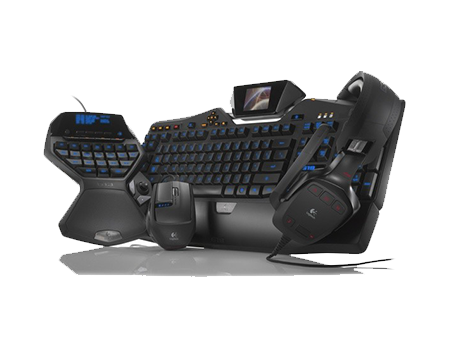

PERIFERICOS DE ENTRADA
Son los que permiten introducir datos externos a la computadora para su posterior tratamiento por parte del CPU.
Estos datos pueden provenir de distintas fuentes, siendo la principal un ser humano. Los periféricos de entrada más habituales son:
- Teclado
- Micrófono
- Escáner
- Ratón o mouse
- Escáner de código de barras
- Cámara web
- Lápiz óptico
- Cámara digital
